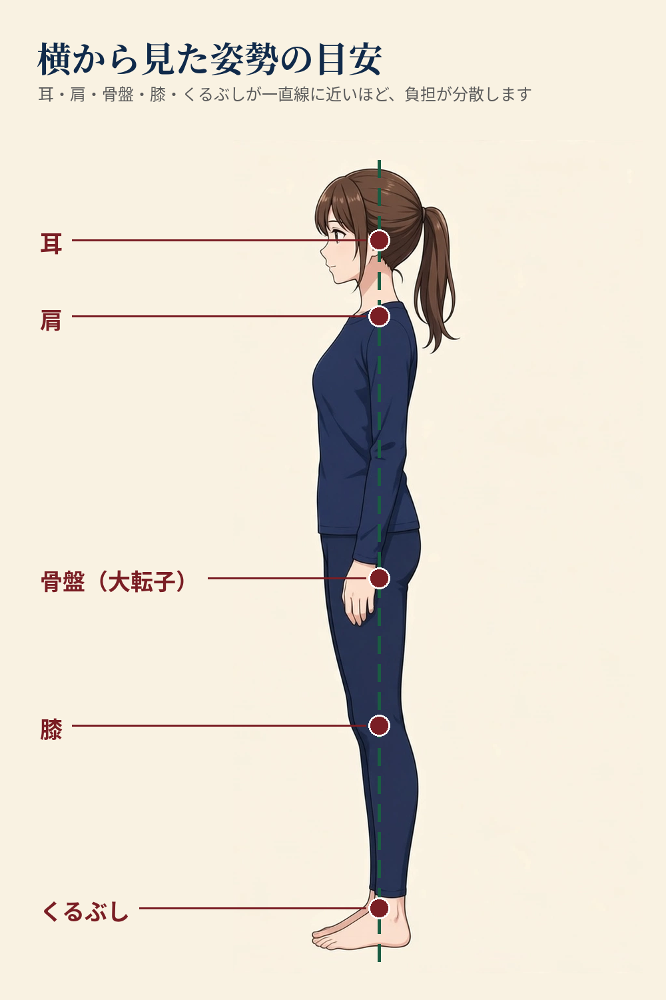

BEAUTY SEITAI
美容整体とは
美容整体は、見た目のラインだけを見るものではありません。姿勢の土台、筋肉の使い方、体の巡りを一緒に見ることで、日々の動きやすさと整った印象の両方を目指す考え方を解説します。
美容整体とは何か｜見た目と動きを一緒に見る視点
美容整体とは、姿勢や体のラインといった見た目の印象と、立つ・座る・歩くといった日常の動きやすさを、切り離さずに一緒に考えるケアの考え方です。たとえば肩の高さが左右で違う、スカートの裾が回ってしまう、写真で見ると体が少し傾いて見える。こうした見た目の気になりごとの背景には、骨盤の傾き方や背骨のカーブ、筋肉の使い方の偏りが関係していることが少なくありません。逆に、体が動かしにくいと感じる場面でも、姿勢の土台が安定すると歩幅や腕の振りが自然になることがあります。ステラカストル新大阪では、見た目だけを整えようとするのではなく、体が本来持っているバランスを取り戻す過程の中で、ラインの印象も変わっていくという順序を大切にしています。まずは仕組みを知ることが、その第一歩です。また、美容整体では施術の前後で鏡や写真を使って姿勢の見え方を一緒に確認することも大切にしています。自分では気づきにくい肩の高さや体の傾きを客観的に見ることで、どの部分に負担が集まっているのかが具体的に分かります。気づきがあると、普段の座り方や荷物の持ち方にも自然と意識が向き、施術の時間以外でも体をいたわる行動が増えていきます。見た目と動きの両面から体を捉える視点は、こうした日常の変化まで含めた大きな枠組みとして成り立っています。
なぜ新大阪の暮らしで姿勢が偏りやすいのか
新大阪は新幹線と御堂筋線が交わる移動の拠点で、この街で働く方・過ごす方には、長時間同じ姿勢が続く場面がとても多いのが特徴です。西中島南方から新大阪にかけてのオフィスでは、パソコンに向かう時間が長く、画面に集中するほど頭が前に出て、肩が内側に入りやすくなります。また、出張や旅行で新幹線に2時間、3時間と座り続けると、骨盤が後ろに倒れたまま固まり、降りた直後に腰まわりが重く感じることがあります。キャリーバッグをいつも同じ手で引く、電車ではいつも同じ側のつり革を持つ、といった小さな癖も、積み重なると体の使い方の偏りにつながります。姿勢の偏りは特別なことではなく、暮らしの繰り返しの中で少しずつ形作られるものです。だからこそ、暮らしの場面ごとに体の状態を振り返る視点が役立ちます。さらに、出張の多い方では、移動日と通常の勤務日で体の状態が大きく違うことも珍しくありません。移動日は歩数が意外と多い一方で座る時間も長く、通常日は歩数は少なくても画面作業の緊張が続きます。どちらの日も終わる頃には体が固まった感覚があるのは、使う筋肉と使わない筋肉の差がどちらの日にも生まれるためです。美容整体では、その日の過ごし方を伺ったうえで、固まりやすい部分と疲れやすい部分を見分け、施術の配分を調整します。暮らしのパターンを知ることが、的確なケアの前提になります。
整体・エステ・医療との違いを知っておく
美容整体を理解するうえで、整体やエステ、医療との違いを知っておくと、目的に合った選び方がしやすくなります。医療は病気やけがの診断と治療を行う場であり、痛みが強い場合やしびれがある場合などは、まず医療機関への相談が優先です。エステは、肌やボディの手入れを通じて心地よさや見た目のケアを楽しむ場として広く親しまれています。整体は体のバランスや関節の動きに着目する手技全般を指す言葉です。その中で美容整体は、姿勢やラインの印象に特に目を向け、骨格の土台と筋肉の状態を手技で整えていくアプローチを取ります。ステラカストル新大阪の施術は医療行為ではなく、病気の治療を目的としたものではありません。体の仕組みを踏まえて姿勢と巡りに働きかける、日常のケアの一つとして位置づけています。選び方に迷ったときは、目的をはっきりさせることが近道です。痛みやしびれなど体の不調そのものが気になる場合は医療へ、肌の手入れや香りを楽しむ時間を目的とする場合はエステへ、姿勢やラインの印象と日常の動きやすさを一緒に見直したい場合は美容整体へ、というように整理すると、自分に合う場所が見えてきます。複数のケアを組み合わせる方もいますが、それぞれの役割を理解しておくと、期待と実際のずれが少なくなり、納得して続けやすくなります。
姿勢を見る4つのポイント｜土台・背骨・肩・頭
美容整体で姿勢を見るときは、体を部分ごとではなくつながりとして捉えます。図1のとおり、主に4つのポイントを確認します。1つ目は土台となる骨盤で、傾きや左右の高さが全体の出発点になります。2つ目は背骨のカーブで、腰の反り、背中の丸み、首のカーブが連動して姿勢の形を作ります。3つ目は肩と肩甲骨の位置で、巻き肩や左右差は腕の動きや首まわりの張り感にも関わります。4つ目は頭の位置で、頭が体の軸より前に出るほど、首や肩の筋肉にかかる負担は大きくなります。これらは互いに影響し合うため、一か所だけを見ても全体像はつかめません。たとえば骨盤が後ろに倒れれば背中は丸くなり、頭は前に出やすくなります。全体のつながりを見ることが、美容整体の基本の見方です。この4つのポイントは、立つ姿勢だけでなく座る姿勢や歩く姿勢にも当てはまります。たとえば椅子に座ったとき、骨盤が後ろに倒れていれば肩は前に出て、頭も画面へ近づきます。歩くときは、骨盤の安定が脚の振り出しを支え、肩の位置が腕の振りを決めます。場面が変わっても、見るべき土台は同じです。施術では寝た姿勢、座った姿勢、立った姿勢のそれぞれで確認を行い、場面ごとの違いも含めて全体像を捉えるようにしています。一つの姿勢だけでは分からない癖が、比較することで見えてきます。

施術では何をするのか｜90分の流れの考え方
ステラカストル新大阪の美容整体は90分10,000円で、最初に姿勢や体の動きを確認する時間を取り、気になる場面や暮らしの習慣も伺います。そのうえで、張りが強い筋肉にはゆっくりと圧を加えてゆるめるアプローチを、動きが鈍くなっている関節まわりには無理のない範囲で動きを引き出すアプローチを組み合わせます。オイルマッサージで表面の巡りを促しながら、美容整体の手技で土台に働きかける流れが基本です。強く押せばよい、大きく動かせばよいという考え方は取りません。体の反応を見ながら圧や角度を調整し、その日の状態に合わせます。施術の目的は、その場限りの心地よさだけでなく、立ったとき・歩いたときの感覚の変化に気づいていただくことです。施術後は、座り方や立ち方の小さな工夫もお伝えしています。施術中は、圧の強さや体の向きについて遠慮なくお伝えいただくことも大切です。心地よいと感じる圧には個人差があり、その日の体調によっても変わります。会話の中で体の反応を確かめながら進めることで、無理のない範囲で深い部分まで働きかけることができます。また、施術の終盤には立った姿勢をもう一度確認し、足裏の体重のかかり方や肩の位置の変化を一緒に確かめます。変化を自分の感覚で確かめることが、日常に戻ってからも姿勢を意識するきっかけになります。
日常に生かすために｜知ることがケアの始まり
美容整体の考え方は、施術の時間だけでなく日常にも生かせます。たとえばデスクでは、骨盤を立てて座る意識を持つだけで背中の丸みは変わります。新幹線や電車の移動では、到着後に軽く背伸びをして、固まった腰まわりを動かす習慣が助けになります。旅行から戻った日は、荷物を下ろしたらまず深呼吸をして、歩いて巡りを戻すことも一つの方法です。このシリーズでは次回以降、骨盤と姿勢、筋肉のバランス、むくみと巡り、自律神経、女性ホルモンと年代別の変化を、一つずつ詳しく解説していきます。仕組みが分かると、自分の体の変化にも早く気づけるようになります。気になるテーマから読み進めていただき、日々のセルフケアや施術を受ける際の参考にしてください。体の整え方に正解は一つではありませんが、知ることは選ぶ力につながります。知ることの良さは、体の変化に振り回されにくくなる点にもあります。夕方に肩が重くなる理由が分かれば、昼のうちに肩を回す工夫ができますし、移動の後に腰が重くなる理由が分かれば、到着後の歩き方を変えることができます。理由が分からないままでは不安だけが残りますが、仕組みが分かると対処の選択肢が増えます。このシリーズは、その選択肢を増やすための読み物です。読み終えた後に、自分の暮らしの中で試せることが一つでも見つかれば、それがケアの確かな一歩になります。
関連する症状・お悩み
よくあるご質問
美容整体は医療ですか？
いいえ、医療行為ではありません。病気の診断や治療は行わず、姿勢や筋肉の状態に手技で働きかける日常のケアです。強い痛みやしびれがある場合は医療機関へご相談ください。
施術時間と料金を教えてください。
ステラカストル新大阪の美容整体は90分10,000円です。最初に姿勢や動きの確認とお話を伺う時間を含みます。
出張や旅行の前後でも受けられますか？
はい。長距離移動で体が固まった感じがあるときなど、移動前後のタイミングでご利用いただく方もいらっしゃいます。体調に不安がある日は無理のない範囲でご相談ください。
1回で姿勢は変わりますか？
施術後の立ち姿や動きの感覚に変化を感じる方はいますが、姿勢は暮らしの習慣の積み重ねでもあります。断定はせず、日常の工夫と合わせて継続的に見ていくことをおすすめしています。
専門解説シリーズ
施術者について
平賀 伸人（ひらが のぶひと／男性セラピスト）｜施術歴30年。鍼灸師（国家資格）・登録販売者・アロマセラピスト・パーソナルトレーナーの資格を持ち、オイルマッサージと美容整体を、その日の状態とご希望に合わせて組み合わせて施術します。このページの内容は、施術者の知識と経験をもとに作成しています。
料金・店舗情報
オイルマッサージ＋美容整体 90分 10,000円（税込）｜コースは1つだけです。有料の追加オプションの販売はありません。お支払いは現金のみです。
住所：大阪市淀川区西中島7-2-13（新大阪駅・大阪メトロ御堂筋線 南口から徒歩3分）｜営業時間：月〜土 17:00〜22:00・日曜休み｜女性専用・完全予約制｜当サロンでは鍼灸施術は行いません。
ご予約・お問い合わせ
ご予約はLINE公式アカウントで受け付けています。ご希望の日時をお送りください。変更・キャンセルはLINEでご連絡ください。キャンセル料はいただきません。